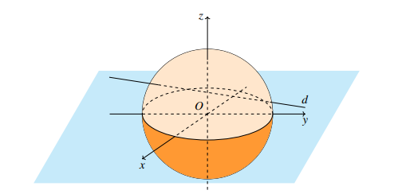
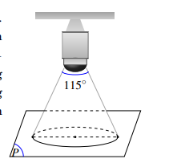
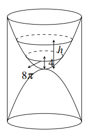

ĐỀ THAM KHẢO
ĐỀ SỐ 3
(Đề gồm 5 trang)
KIỂM TRA CUỐI KÌ 2
Môn: TOÁN 12
Thời gian làm bài: 90 phút, không kể thời gian phát đề
Câu 1. Cho hàm số $y = f(x)$ liên tục, nhận giá trị dương trên đoạn $[a;b]$. Xét hình phẳng $(H)$ giới hạn bởi đồ thị hàm số $y = f(x)$, trục hoành và hai đường thẳng $x = a, x = b$. Khối tròn xoay được tạo thành khi quay hình phẳng $(H)$ quanh trục $Ox$ có thể tích là
Câu 2. Cho $\int_{0}^{2} f(x) \text{d}x = 2026$, tích phân $\int_{0}^{2} (2f(x) - 3x^2) \text{d}x$ bằng
Câu 3. Tìm nguyên hàm của hàm số $f(x) = 2025^x$
Câu 4. Trong không gian với hệ trục tọa độ $Oxyz$, phương trình của đường thẳng đi qua điểm $M(1; -3; 5)$ và có một vectơ chỉ phương $\vec{u}(2; -1; 1)$ là
Câu 5. Trong không gian $Oxyz$, cho mặt phẳng $(P): x - 3y - z + 8 = 0$. Vectơ nào sau đây là một vectơ pháp tuyến của mặt phẳng $(P)$?
Câu 6. Trong không gian với hệ tọa độ $Oxyz$, khoảng cách từ điểm $M(1; 2; 3)$ đến mặt phẳng $(P): x + 2y + 2z - 2 = 0$ bằng
Câu 7. Cho hai biến cố $A, B$ thỏa mãn $P(A) = \frac{2}{5}, P(B|A) = \frac{1}{3}$. Tính $P(A \cap \overline{B})$.
Câu 8. Cho hai biến cố $A$ và $B$, với $P(B) = 0,4$, $P(A|B) = 0,5$, $P(A|\overline{B}) = 0,3$. Tính $P(A)$.
Câu 9. Cho hai biến cố $A$ và $B$ là hai biến cố độc lập, với $P(A) = 0,2024$, $P(B) = 0,2025$. Tính $P(A|B)$.
Câu 10. Trong các phương trình sau, phương trình nào là phương trình của mặt cầu tâm $I(1; -2; 3)$ bán kính $R = 3$
Câu 11. Trong không gian $Oxyz$, cho các điểm $A(1; 2; 0)$, $B(2; 0; 2)$, $C(2; -1; 3)$ và $D(1; 1; 3)$. Đường thẳng đi qua $C$ và vuông góc với mặt phẳng $(ABD)$ có phương trình là
Câu 12. Cho $A$ và $B$ là hai biến cố bất kì, với $P(B) > 0$. Khi đó
Câu 1. Cho đường thẳng $\Delta: \begin{cases} x = 1 + t \\ y = 2 - t \\ z = 3 + t \end{cases}$ và mặt phẳng $(P): x + 2y + z - 4 = 0$.
| a) $\vec{u} = (-1; 1; -1)$ là một vectơ chỉ phương của đường thẳng $\Delta$. | |
| b) $M(0; 3; -2)$ không thuộc đường thẳng $\Delta$. | |
| c) Đường thẳng $\Delta$ vuông góc với mặt phẳng $(P)$. | |
| d) Đường thẳng $\Delta$ cắt mặt phẳng $(P)$ tại $N(-1; 4; 1)$. |
Câu 2. Trước khi đưa một loại sản phẩm ra thị trường, người ta đã phỏng vấn ngẫu nhiên 200 khách hàng về sản phẩm đó. Kết quả thống kê như sau: có 105 người trả lời "sẽ mua"; có 95 người trả lời "không mua". Kinh nghiệm cho thấy tỉ lệ khách hàng thực sự sẽ mua sản phẩm tương ứng với những cách trả lời "sẽ mua" và "không mua" lần lượt là $70\%$ và $30\%$.
Gọi $A$ là biến cố "Người được phỏng vấn thực sự sẽ mua sản phẩm".
Gọi $B$ là biến cố "Người được phỏng vấn trả lời sẽ mua sản phẩm".
| a) Xác suất $P(B) = \frac{21}{40}$ và $P(\overline{B}) = \frac{19}{40}$. | |
| b) Xác suất có điều kiện $P(A|B) = 0,3$. | |
| c) Xác suất $P(A) = 0,51$. | |
| d) Trong số những người được phỏng vấn thực sự sẽ mua sản phẩm có $70\%$ người đã trả lời "sẽ mua" khi được phỏng vấn (kết quả tính theo phần trăm được làm tròn đến hàng đơn vị). |
Câu 3. Trong không gian hệ trục tọa độ $Oxyz$ (đơn vị trên mỗi trục là kilômét), đài kiểm soát không lưu của một sân bay ở vị trí $O(0;0;0)$ và được thiết kế phát hiện máy bay ở khoảng cách tối đa $600\text{ km}$. Một máy bay đang chuyển động với vận tốc $900\text{ km/h}$ theo đường thẳng $d$ có phương trình $\begin{cases} x = -1000 + 100t \\ y = -300 + 80t \\ z = 100\sqrt{11} \end{cases} (t \in \mathbb{R})$ và hướng về đài kiểm soát không lưu (như hình vẽ).

| a) Ranh giới vùng phát sóng bên ngoài của đài kiểm soát không lưu trong không gian là mặt cầu có bán kính bằng $300\text{ km}$. | |
| b) Phương trình mặt cầu để mô tả ranh giới bên ngoài vùng phát sóng của đài kiểm soát không lưu trong không gian là $x^2 + y^2 + z^2 = 360000$. | |
| c) Máy bay đang chuyển động theo đường thẳng $d$ đến vị trí điểm $M(-500; 100; 100\sqrt{11})$. Vị trí này nằm ngoài vùng kiểm soát không lưu của đài kiểm soát không lưu sân bay. | |
| d) Thời gian kể từ khi đài kiểm soát không lưu phát hiện máy bay đến khi máy bay ra khỏi vùng kiểm soát không lưu là $\frac{4}{3}$ giờ. |
Câu 4. Xét tính đúng sai của các phép tính tích phân sau.
| a) $I = \int_{0}^{2} |x-1|\text{d}x = \int_{0}^{1} (x-1)\text{d}x + \int_{1}^{2} (x-1)\text{d}x$. | |
| b) $I = \int_{0}^{2} |x-1|\text{d}x = 1$. | |
| c) Cho $a$ là số thực dương thì tích phân $I = \int_{-1}^{a} |x|\text{d}x = \frac{a^2+1}{2}$. | |
| d) Nếu $I = \int_{0}^{3} |2^x - 4|\text{d}x = a + \frac{b}{c \ln 2}$ với $a, b, c \in \mathbb{Z}$ và $\frac{b}{c}$ là phân số tối giản thì khi đó ta có giá trị của biểu thức $P = a^2 + b^2 + c^2 = 3$. |
Câu 1. Trong không gian $Oxyz$, cho 4 điểm $A(2;0;0)$, $B(0;2;0)$, $C(0;0;2)$, $D(2;2;2)$. Gọi $I(a;b;c)$ là tâm mặt cầu $(S)$ ngoại tiếp tứ diện $ABCD$, tính $a+b+c$.
Câu 2. Trong không gian với hệ trục tọa độ $Oxyz$, cho đường thẳng $\Delta: \begin{cases} x = 2 - mt \\ y = 2mt \\ z = 1 - 4t \end{cases}$ và đường thẳng $d: \frac{x-1}{2} = \frac{y+2}{-3} = \frac{z}{1}$. Tìm $m$ để $\Delta \perp d$.
Câu 3. Trong không gian với hệ tọa độ $Oxyz$, cho điểm $A(1; -1; 2)$, đường thẳng $d: \frac{x+1}{2} = \frac{y}{1} = \frac{z-2}{1}$ và mặt phẳng $(P): x + y - 2z + 5 = 0$. Xét đường thẳng $\Delta$ cắt $d$ và $(P)$ tại hai điểm $M, N$ sao cho $A$ là trung điểm của $MN$. Biết vectơ $\vec{u} = (1; a; b)$ là một vectơ chỉ phương của $\Delta$. Tính $a+b$.
Câu 4. Góc quan sát ngang của một camera là $115^\circ$. Trong không gian $Oxyz$, camera được đặt tại điểm $C(4; 2; 3)$ và chiếu thẳng về phía mặt phẳng $(P): 2x - y + 2z - 3 = 0$. Biết vùng quan sát được trên mặt phẳng $(P)$ của camera là hình tròn. Tính diện tích của vùng quan sát đó (làm tròn kết quả đến chữ số thập phân thứ nhất).

Câu 5. Một nhà máy có hai phân xưởng I và II tương ứng làm ra $40\%$ và $60\%$ sản phẩm của nhà máy. Biết rằng tỷ lệ phế phẩm của hai phân xưởng I và II tương ứng là $1\%$ và $2\%$. Chọn ngẫu nhiên một sản phẩm của nhà máy thì thấy nó là phế phẩm. Tính xác suất để sản phẩm đó thuộc phân xưởng I.
Câu 6. Một chiếc đồng hồ cát như hình vẽ gồm hai phần đối xứng nhau qua mặt phẳng nằm ngang và đặt trong một hình trụ. Thiết diện thẳng đứng qua trục của nó là hai parabol chung đỉnh và đối xứng nhau qua mặt phẳng nằm ngang. Ban đầu lượng cát dồn hết ở phần trên của đồng hồ thì chiều cao của mực cát bằng $\frac{2}{3}$ chiều cao của bên đó (xem hình vẽ). Cát chảy từ trên xuống dưới với tốc độ $v(t) = 0,2t + 13 \text{ (cm}^3/\text{phút)}$. Biết sau 20 (phút) thì cát chảy hết xuống phần bên dưới của đồng hồ. Khi chiều cao của cát còn $4 \text{ (cm)}$ thì bề mặt trên cùng của cát tạo thành một đường tròn có chu vi bằng $8\pi \text{ (cm)}$. Hỏi chiều cao của khối trụ bên ngoài bằng bao nhiêu centimet (nếu kết quả là số thập phân thì làm tròn đến hàng đơn vị)?

Tổng điểm: 0 / 10
Kéo lên trên để xem đáp án đúng và lời giải chi tiết cho từng câu.